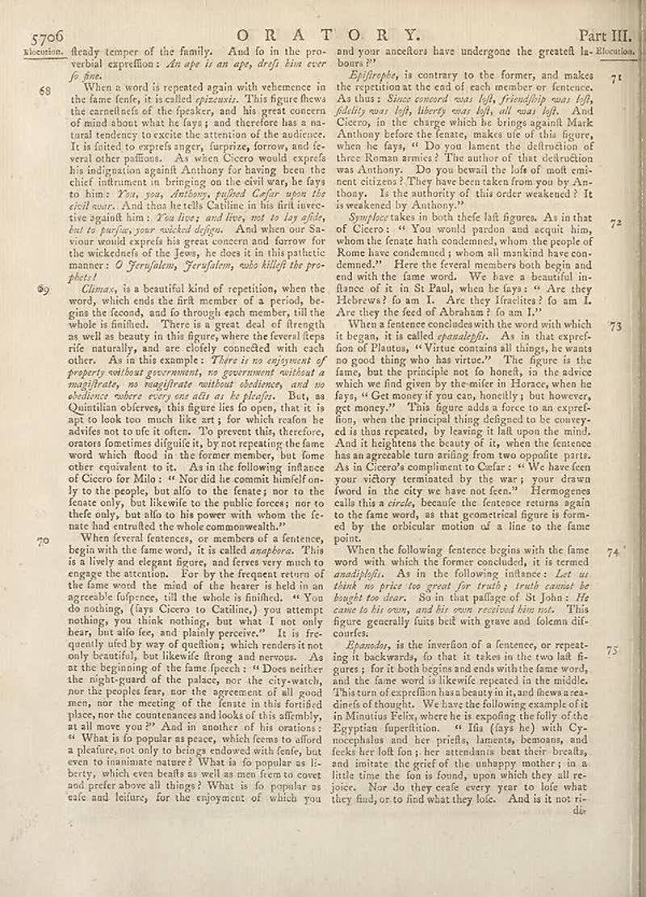

page-1933-ae507137e9dc.jpg

Page ID: britannica:309f765b1ecc83e0a7f7762e44b4a927a7555443:train:1933
Running head: 5706
Image SHA-256: ae507137e9dccc05ea8a69ead38423f1107c58ffe3152883775f70afc1694223

(untitled) [?]
floretion firedy temper of the family. And fo in the pro- verbal exprion: _An ape is an ape, drift him ever_ _fo fine._ When a word is repeated again with vehemence in the fane feen, it is called _epizensis_ This figure flews the carefulness of the freaker, and his great concern of mind about what he fears and therefore has a na- tural tendency to exercise the attention of the audience. It is fuited to exprets anger, furprizes, forrow, and fe- veral other affiliates. As when Cicero would experts his indignation against Anthony for having been the chief instrument in bringing on the civil war, he fays to him: _You, you, Authorism pulled Defer upon the_ court issue. It was that he tells Crafting in his first direc- tive against him : _You lives; and live, not to lay afide_, _but to paying your racked defying._ And when our Sa- viour would expect his great concern and former for the wandche of the Jews, he does it in this pathetic manner: _O Jernjalem, Jerjalem, who kilitl the pro-_ _phs!_. 90 70 73 and your ancestors have undergone the greatest la-Blocution boats? Epifrephe, is contrary to the former, and makes the repetitions at the end of each member or feneen. As thus: _Ruse concord was left, friendship was left,_ _fidelity was left, liberty was left, all was left_. And Cicero, in the charge which she brings against Mark Authority before the feature, makes life of this figure, when he fays, " Do you lament the deltruth of three Roman amics" The author of this detective was Anthony. Do you bewah the loaf of most emi- ent citizens? They have been taken from you by An- thony. Is the authority of this order weakened? It is weekend by Anthony.” _Sympleces_ takes in both thefele fat figures. As in that of Cicero: " You would patted and assume him, whom the female bath condemned, whom the people of Kome have condemned; whom all mankind have con- demend?" Here the feveral members both begin and end with the famed. We have a beautiful in- Bance of in St Raul, when he fays: " Are they Hebrews? Io am I. Are they fireliter? Io am L. Are they the feet of Abraham ? Io am I. Are they the best of Abraham ? Go am I.’ Where fenestens could wish the word with which it began, it is called _spanialphs_. As in that expref- tion of Phants, « Virte comans all things, he wanna no good thing who like virtue." The figure is the fame, but the principle not fo honeln, in the advice which we find given by the-miler in Horos, when he fays, " Get money if you can, possibly, but however, get money." This figure adds a force to an expref- tion, when the principal thing designed to be courvye- ed is thus repeated, by being it fall upon the mind. And it begins the beauty of it, when the fenestone has an agreeable turn arising from two opposite parts. As in Cicero's commenting Cofar: " We have few your colony remained by the way, your own lived in the city we have not femen." Hermogenes calls this * circle, because the fenestence returna on the fame work, as that converted figure is form- ed by the orbicular motion of a line to the fame points. When the following fenestene begins with the fam word with which the former concluded, it is termed anadbigfix. As in the following influence: _Let us_ _think to price too good for truth y forth cannot be_ _bought too dies._ So in that suffage of St John: He come to his own, and his own received him not. This figure generally fits belt with grave and folemn dif- counter. _Epandas_, is the freedom of a fenestor, or repeat- ing in backwares, fo that it is taken in the two half fa- gerets for it both begins and ends with the fame words, and the fame word is likewise repeated in the middle. That term of preffin both beauty traits, and flews arees- dirafs of thought. We have the following example of is la Minutus Feliss, where he is exopling the folly of the Egyptian fapetdition. " Ida (fay fys) with Cy- mosphalus and her priefs, lemons, bemanns, and fcks her loft for, jer strenians beat their breatls, and insure the grief of the unhappy mother; in a little time the four is found, upon which they all re- pieces. War do they excel every year to lafe what they find, or to find what they lole. And is it not ri-
OCR issues
No OCR issues recorded for this page.